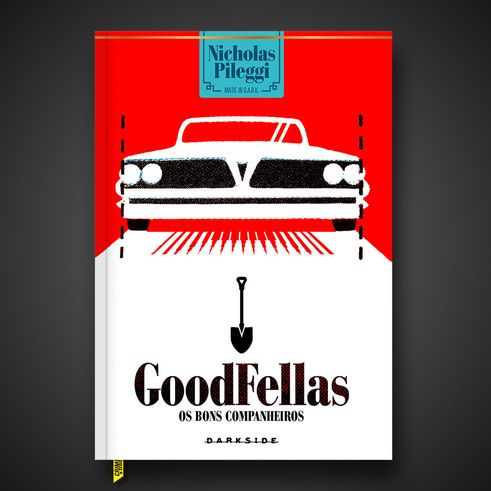

O íntimo relato do mundo repleto de riscos do que alguns chamam de Máfia. Assim é Os Bons Companheiros, livro de não ficção escrito por Nicholas Pileggi, publicado originalmente em 1985, e base para o clássico filme dirigido por Martin Scorsese em 1990. Nele, acompanhamos a história de Henry Hill, nascido no Brooklyn, em Nova York, com mãe de origem siciliana e pai de descendência irlandesa, que já aos doze anos passa a integrar uma gangue de mafiosos da vizinhança como garoto de recados. Pileggi reconstrói a vida e trajetória de Hill com o bando controlado pela família Lucchese — considerada a mais poderosa das cinco famílias mafiosas originais da cidade — em detalhes fascinantes e brutais, em uma narrativa permeada de violência, loucuras, golpes e seu conhecido código de honra.